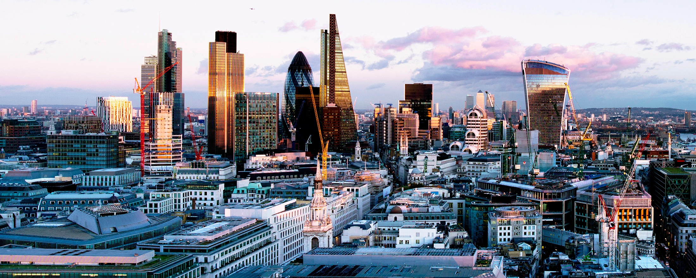
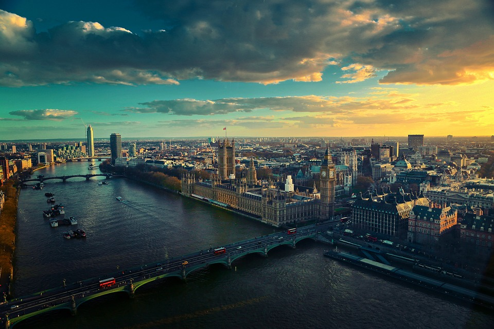
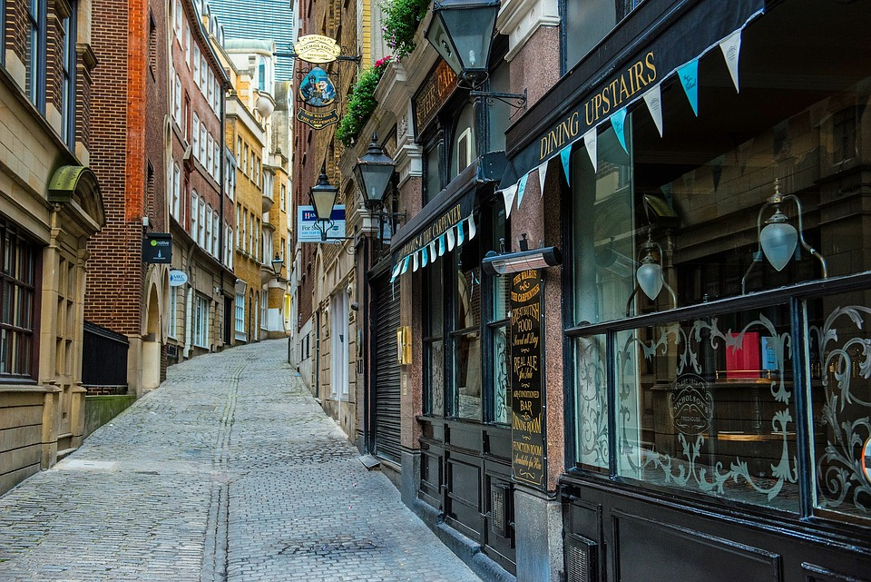

London is the capital city of England.
-
Population: Approximately
9 million people in the
metropolitan area.
-
Economy: London is one of the largest financial centers in the
world, with a
GDP of over $700 billion in
2020.
-
History: London has a rich and diverse history, with roots dating
back to the Roman Empire.
-
Tourist Attractions: London is one of the most popular tourist
destinations in the world, attracting over 30 million visitors
annually. Some of its famous landmarks include Buckingham Palace
(the official residence of the monarch), the Tower of London (a
historic castle and former prison), and the Elizabeth Tower
(formerly known as Big Ben).
1 / 4
Union Jack is the national flag of the United Kingdom
2 / 4

Look at the city from bird's-eye view
4 / 4

One of the alleys
❮
❯